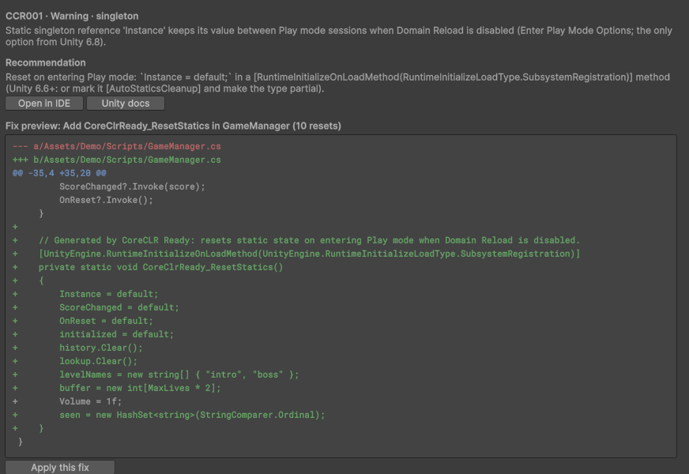

Pangaman Studios
A small, independent publisher of Unity editor tools. We build focused tools for one job each, explain what they do and what they don't, and keep them working as Unity changes.


Tools
CoreCLR Ready
Finds the C# code in a Unity project that breaks when Domain Reload is turned off and when the project moves to Unity's CoreCLR scripting runtime, and shows the change each problem needs. Available as a free Lite edition (scan and preview) and a Pro edition (apply fixes with backup and undo).
How we work
- Editor-only tools. Nothing is added to your player builds.
- No telemetry, no accounts, no network calls. See the privacy policy.
- We test on the Unity versions we list, and say plainly which ones we haven't tested.
- Built with AI assistance and reviewed by a person. More about that.
News
CoreCLR Ready 0.1.0 is being prepared for the Unity Asset Store. Release notes appear in the changelog as versions ship.